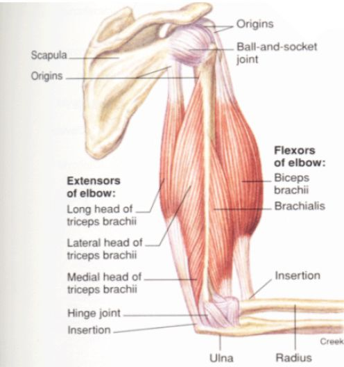
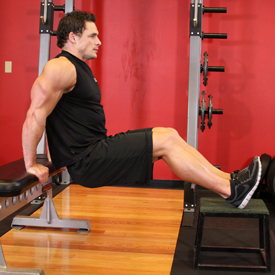
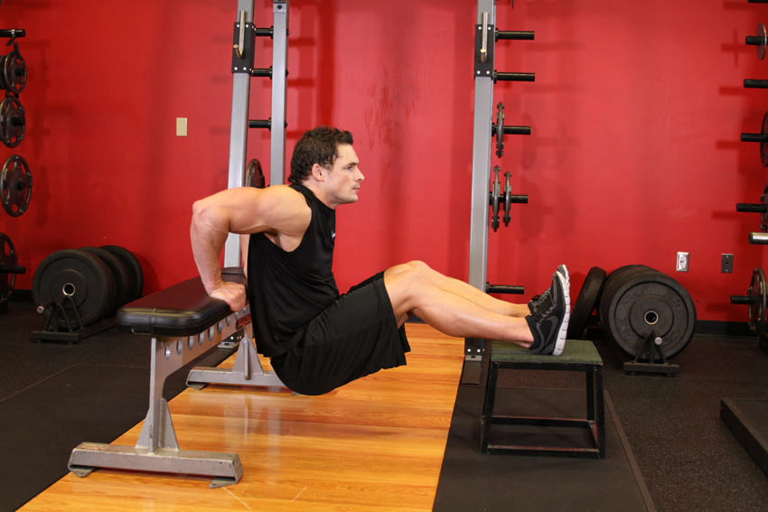
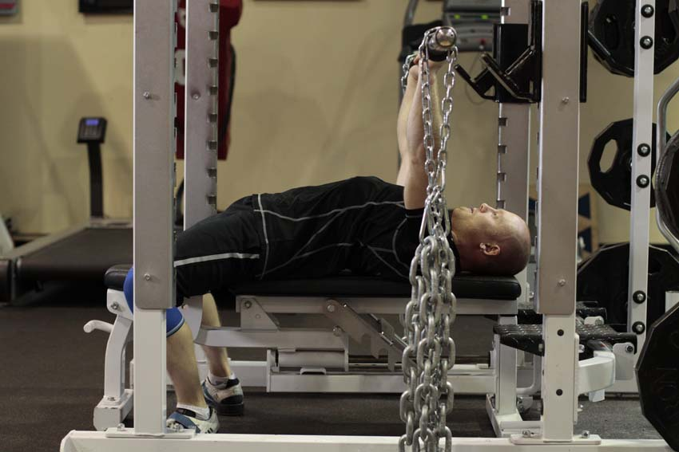
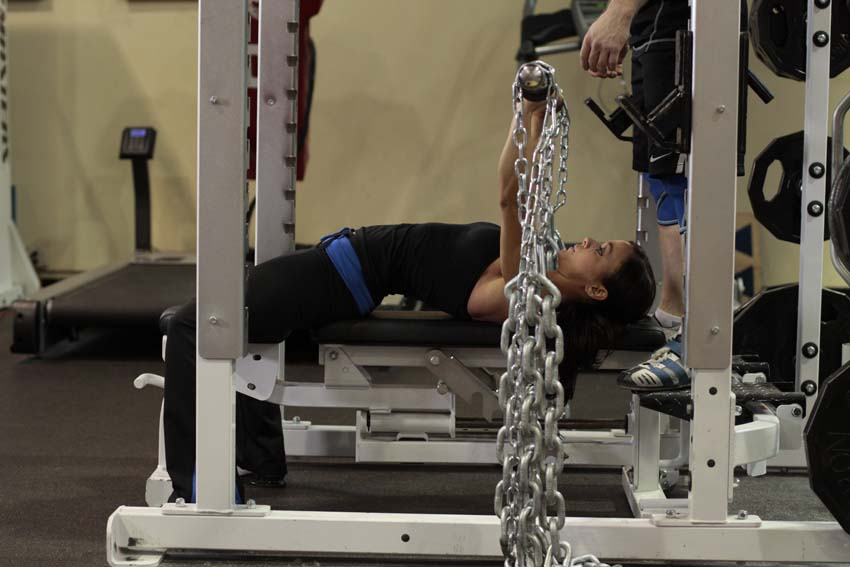
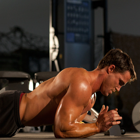
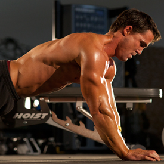
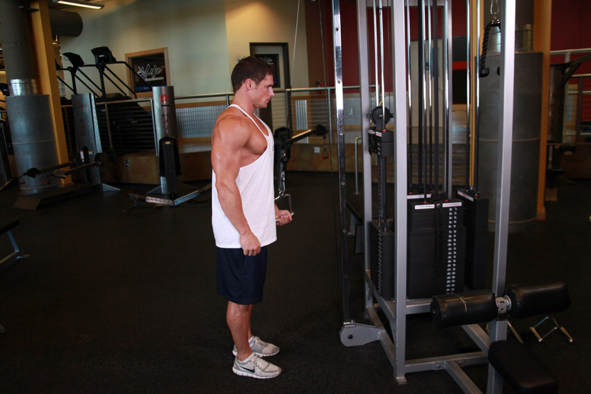
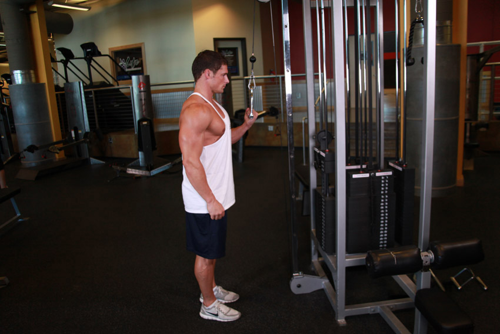

<!DOCTYPE html PUBLIC "-//W3C//DTD XHTML 1.0 Strict//EN" "http://www.w3.org/TR/xhtml1/DTD/xhtml1-strict.dtd">
<!--
Design by Free CSS Templates
http://www.freecsstemplates.org
Released for free under a Creative Commons Attribution 2.5 License

Name       : Open-Air
Description: A two-column, fixed-width design with dark color scheme.
Version    : 1.0
Released   : 20120818

-->
<html xmlns="http://www.w3.org/1999/xhtml"/>
<?php
session_start();
include('mygymdbConnect.php');
include('SignUp.php');
?>
<html>
    <head>
        <title> MyGym</title>
        <div style="position :absolute;top:20px;left:40px">
            <p><h2>MY<br/> 
                    GYM 
                    <br/></h2></p></div>
        <div style="position: absolute ;left:  200px; top: 20px;"> </div>
        <div style="position:absolute;top:37%;left:35%"/>
        <link href="http://fonts.googleapis.com/css?family=Oswald:400,300" rel="stylesheet" type="text/css" />         

        <link href="style.css" rel="stylesheet" type="text/css" media="screen" />
        <a href="home.php" style="text-decoration: none;color: black;font:serif;font-weight: bold;  ">Home |</a>
        <a href="About.html" style="text-decoration: none;color: black;font:serif;font-weight: bold;  ">About |</a>
        <a href="sign up.html" style="text-decoration: none;color: black;font:serif;font-weight: bold;  ">Sign up |</a>
        <a href="Activities.html" style="text-decoration: none;color: black;font:serif;font-weight: bold;  ">Activities |</a>
        <a href="Trainers.html" style="text-decoration: none;color: black;font:serif;font-weight: bold;  ">Trainers |</a>
        <a href="classes.html" style="text-decoration: none;color: black;font:serif;font-weight: bold;  ">Classes |</a>
        <a href="Training.html" style="text-decoration: none;color: black;font:serif;font-weight: bold;  ">Train |</a>   

    </head>

    <body>
        <div style="position: absolute;left: -300px">
            <table  cellpadding="10" cellspacing="10" height="400px" width="1200px">
                <tr><td></img></td>
                    <td><b>Description</b><br></br>The long head of the triceps brachii muscle is a muscle of the back of the arm, originating from the scapula and shoulder to insert at the elbow. The triceps brachii has three heads (connective immovable muscle) and is the only muscle on the back of the upper arm. It connects the humerus (upper arm bone) and the scapula (shoulder blade) to the ulna (longest of the forearm bones) and is the primary extensor of the elbow. 
                        The three heads are the lateral, the medial, and the long head. The long head of the triceps brachii muscle, apart from the other triceps muscles, has a role in stabilizing the shoulder joint.       </table></div>
                        <div style="position: absolute;left: -200px;top: 500px" >
                            <table border="2"  cellpadding="10" cellspacing="10" align="center">
                                <tr><td><b>EXERCISES</b></td></tr>
                                <tr><td></img></br>
                                        </img></td>
                                    <td><b>Bench Dips</b>
                                        </br>1-For this exercise you will need to place a bench behind your back. With the bench perpendicular to your body, and while looking away from it, hold on to the bench on its edge with the hands fully extended, separated at shoulder width. The legs will be extended forward, bent at the waist and perpendicular to your torso. This will be your starting position.
                                        </br>2-Slowly lower your body as you inhale by bending at the elbows until you lower yourself far enough to where there is an angle slightly smaller than 90 degrees between the upper arm and the forearm. Tip: Keep the elbows as close as possible throughout the movement. Forearms should always be pointing down.
                                        </br>3-Using your triceps to bring your torso up again, lift yourself back to the starting position.
                                        </br>4-Repeat for the recommended amount of repetitions.
                                        </br>Variations: You can place your legs on top of another flat bench in front of you in order to make the exercise more challenging. If that variation also becomes easy, then you can have a partner place plates on top of your lap. Make sure that in this case the partner ensures that the weights stay there throughout the movement.

                                    </td>
                                </tr>
                                <tr><td></img></br>
                                        </img></td>
                                    <td><b>Bench Press with Chains</b>
                                        </br>1-Adjust the leader chain, shortening it to the desired length.Place the chains on the sleeves of the bar.
                                        </br>2-Lying on the bench, get your head beyond the bar if possible. Tuck your feet underneath you and arch your back. Using the bar to help support your weight, lift your shoulder off the bench and retract them, squeezing the shoulder blades together. Use your feet to drive your traps into the bench. Maintain this tight body position throughout the movement. However wide your grip, it should cover the ring on the bar.
                                        </br>3-Pull the bar out of the rack without protracting your shoulders. Focus on squeezing the bar and trying to pull it apart. Lower the bar to your lower chest or upper stomach. The bar, wrist, and elbow should stay in line at all times.
                                        </br>4-Pause when the barbell touches your torso, and then drive the bar up with as much force as possible. The elbows should be tucked in until lockout.
                                    </td>
                                </tr>
                                <tr><td></img></br>
                                        </img></td>
                                    <td><b>Body-Up</b>
                                        </br>1-Assume a plank position on the ground. You should be supporting your bodyweight on your toes and forearms, keeping your torso straight. Your forearms should be shoulder-width apart. This will be your starting position.
                                        </br>2-Pressing your palms firmly into the ground, extend through the elbows to raise your body from the ground. Keep your torso rigid as you perform the movement.
                                        </br>3-Slowly lower your forearms back to the ground by allowing the elbows to flex.
                                        </br>4-Repeat.          
                                    </td>
                                </tr>
                                <tr><td></img><br></br>
                                        </img>  </td>
                                    <td><b>Cable One Arm Tricep Extension</b>
                                        </br>1-With your right hand, grasp a single handle attached to the high-cable pulley using a supinated (underhand; palms facing up) grip. You should be standing directly in front of the weight stack.
                                        </br>2-Now pull the handle down so that your upper arm and elbow are locked in to the side of your body. Your upper arm and forearm should form an acute angle (less than 90-degrees). You can keep the other arm by the waist and you can have one leg in front of you and the other one back for better balance. This will be your starting position.
                                        </br>3-As you contract the triceps, move the single handle attachment down to your side until your arm is straight. Breathe out as you perform this movement. Tip: Only the forearms should move. Your upper arms should remain stationary at all times.
                                        </br>4-Squeeze the triceps and hold for a second in this contracted position.
                                        </br>5-Slowly return the handle to the starting position.
                                        </br>6-Repeat for the recommended amount of repetitions and then perform the same movement with the other arm.
                                    </td>
                                </tr>
                            </table>
                        </div>
                        </body>
                        </html>